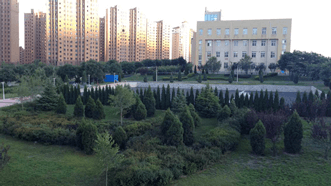

软院的宿舍是不可以给陪同学们报到来的家长住的，所以来校前一定要记得和家长订好宾馆！软院周边的宾馆主要分布在以下几个地方：
软院周边500米内：附近远洋时代城楼盘周围的旅馆，距离学校较近，周围能吃饭的地方只有几家饭店和学校食堂了，而且在开学前都会爆满。
教师楼周围（5路车两站地）：教师楼是学校附近的一个居民区，有一些价格较低的小旅馆，离学校也比较近，周围生活配套设施比较齐全。
安盛广场（5路车40分钟）：是开发区的中心，当然也会有一些上档次的酒店和连锁酒店，周围的生活设施很全面，无论去市内还是回软院都很方便。
